RJ4d test
- Hash: 177f0c9
- Branch: develepment-bc
Bifrost
Intial conditions
| $$\rho_L$$ | $$v_{x,L}$$ | $$v_{y,L}$$ | $$v_{z,L}$$ | $$P_L$$ | $$B_{y,L}$$ | $$B_{z,L}$$ | $$\rho_R$$ | $$v_{x,R}$$ | $$v_{y,R}$$ | $$v_{z,R}$$ | $$P_R$$ | $$B_{y,R}$$ | $$B_{z,R}$$ |
|---|---|---|---|---|---|---|---|---|---|---|---|---|---|
| 1 | 0 | 0 | 0 | 1 | 0 | 0 | 0.3 | 0 | 0 | 1 | 0.2 | 1 | 0 |
Using the stagger2/bifrost solver, with a end time of t=0.2 and timestep of 0.01 produces the following plots
Intial conditions
Intitial conditions are the same as stated from the before. But now using ramses solver instead
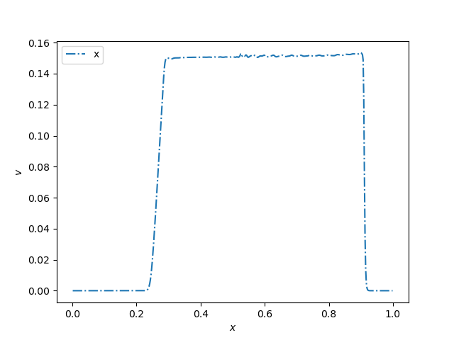 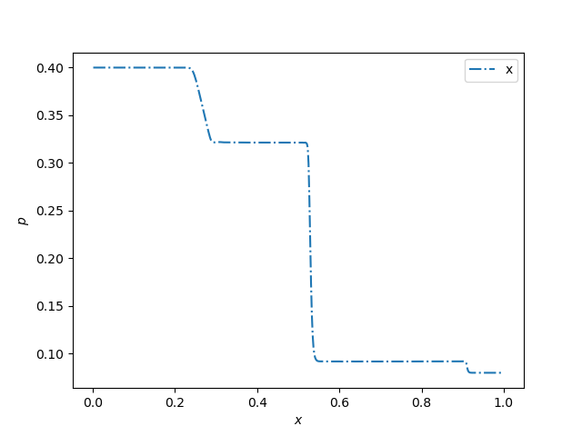 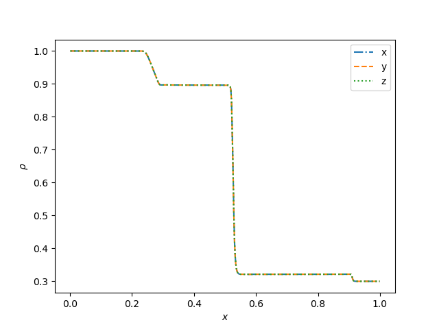
For the iout=16
The corresponding animations are
 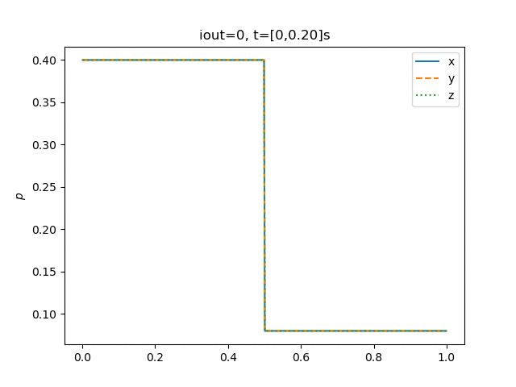
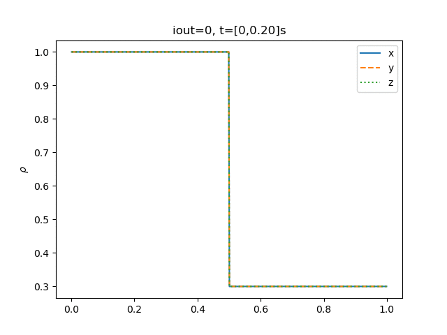
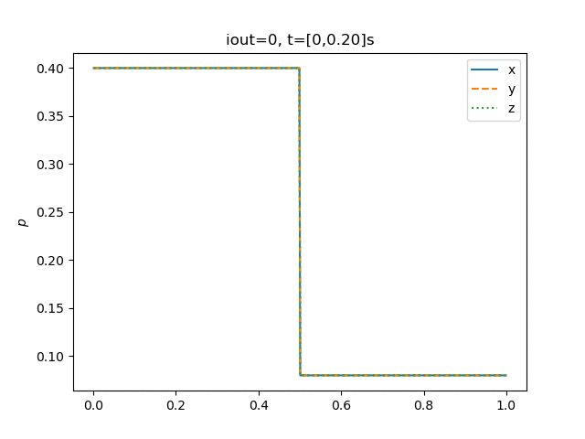
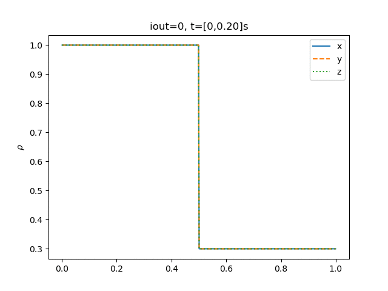
Comparing them to the Fig 15 (Athena: A new code for astrophysical MHD, Stone et al)
Changes to the conditions
Will change all the bifrost parameters with a factor of 10. Since it is already established that it should look identical in all the axis'. I will only animate in the $$x$$-axis.
And the following animations 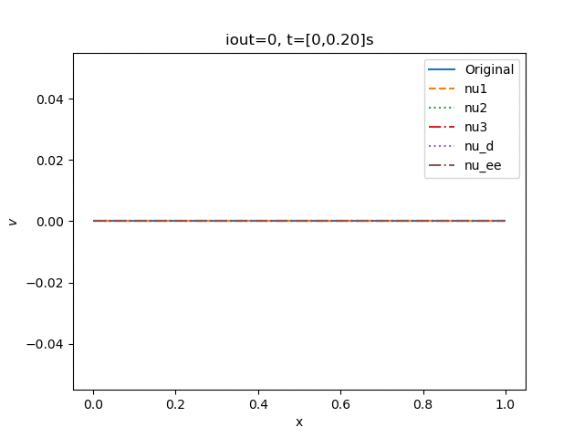 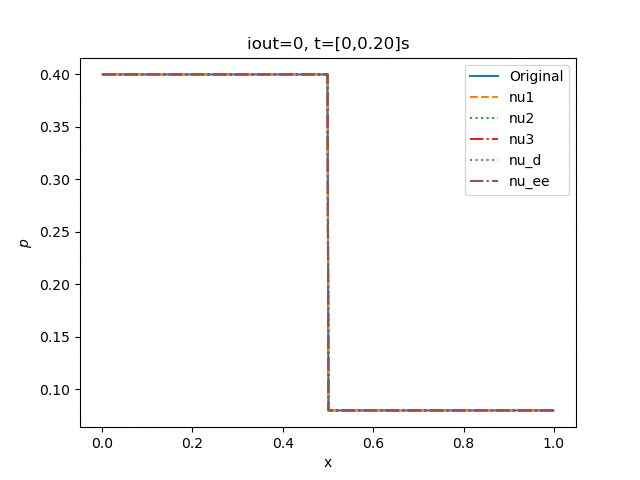 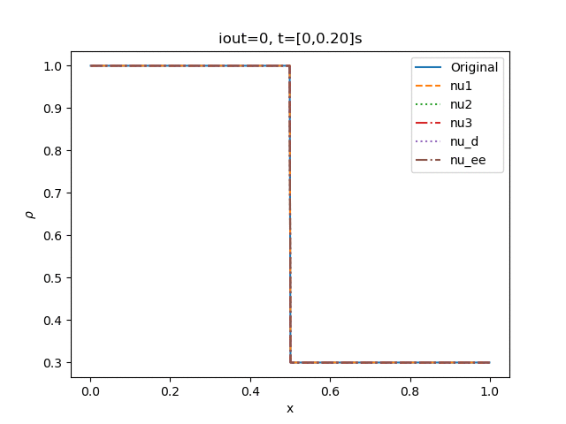
See from the above animations that the only parameter worth studying closer for the time being is the change in velocity.
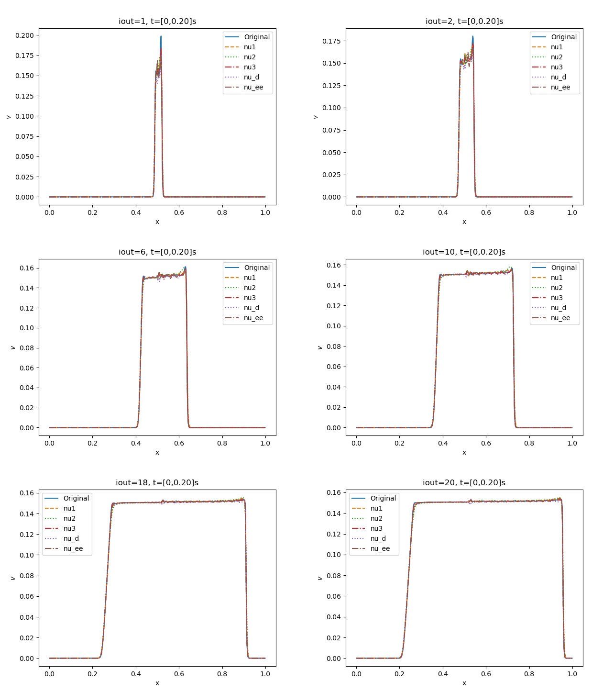 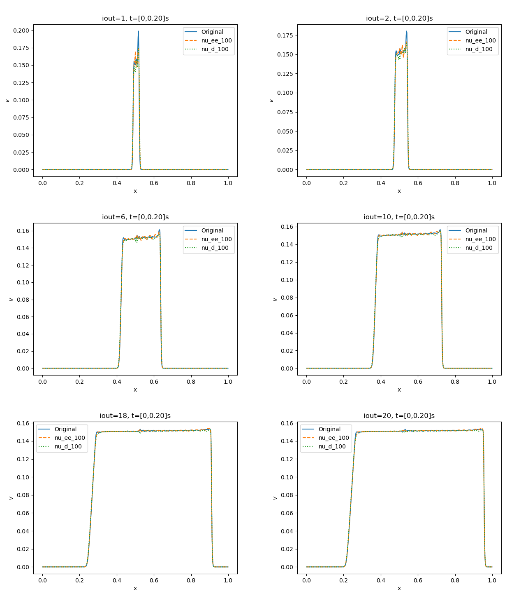 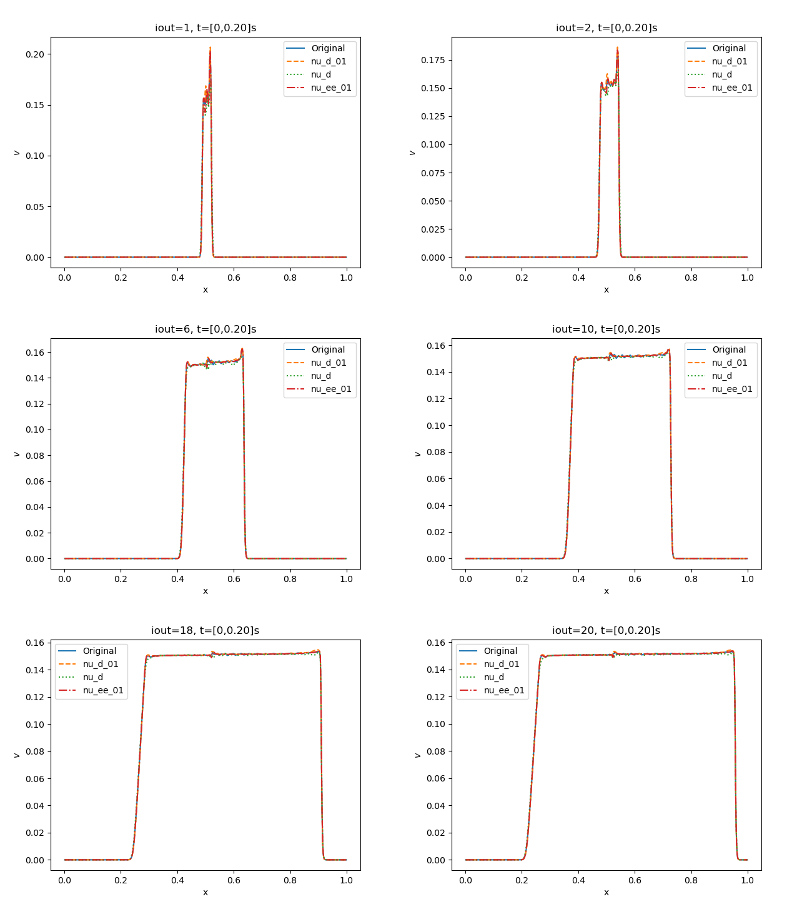
Observe that the parameters stabilize when the time progresses. But that for the $$1/10$$ density bifrost parameter, it will be slightly higher values then the original. And that most of the deviations stems from the intersection between the left and right side of the domain.
Ramses
Using the exact same procedure as above. But now with the solver=ramses/hlld instead. Where the original slope parameter is 3.5. We get the following
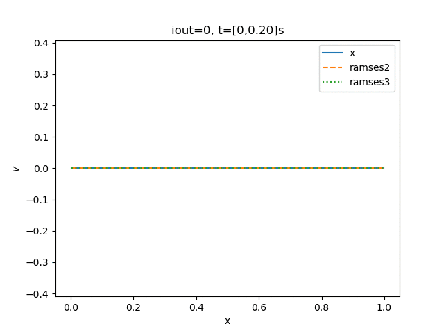 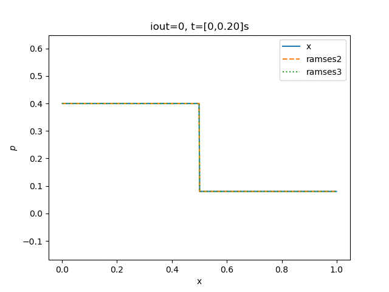 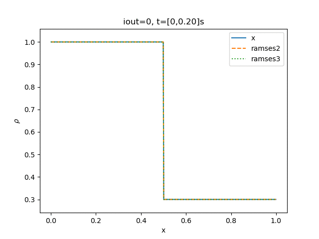
Where we see that the change of slope has very litte effect on the domain. Except for the intersection between the left and right. But interestingly for a slope parameter of one the simulation crashes after one timestep.